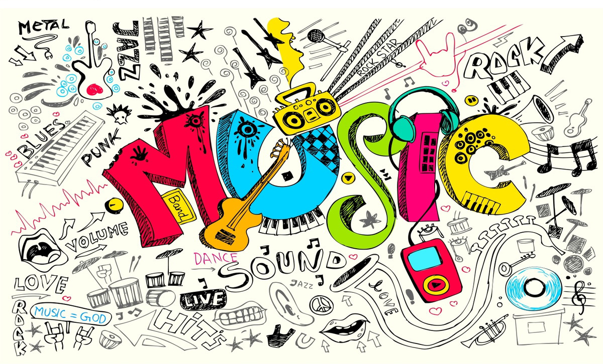
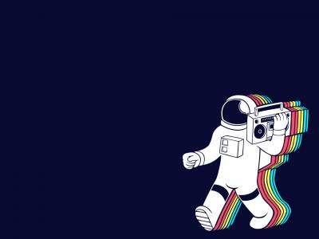

Óla somos Cia da musica um web site focado para o mundo do interterimento músical,
com dowloads gratuitos e pagos, ja nos tornamos o maior website do mundo nesse ramo,
hoje temos todos os gêneros e gostos musicais disponivéis na nossa plataforma.
São milhões de usuarios cadastrados utilizando a plataforma diariamente em todo o mundo. Temos parcerias com gravadoras, artistas e diversas medias online como Youtube e Google music.

Nosso web site já foi premiado com prêmios renomados por grandes eventos, o site foi desenvolvido por programadores de nome e de alta experiência no mercado, utilizando tecnologias como HTML5, CSS, JavaScript, PHP, JAVA. Nomeado o site com mais eficiencia em atender os seus usuarios, trabalhando com todos os publicos.

Website desenvolvido por Miguel Lukas e Robert Uillians, para a Atividade final de PWI do Proffessor Willians, na escola técnica Etec Jardim Angêla.